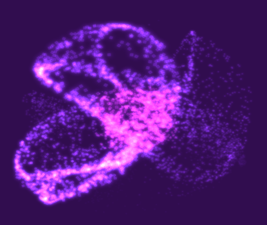
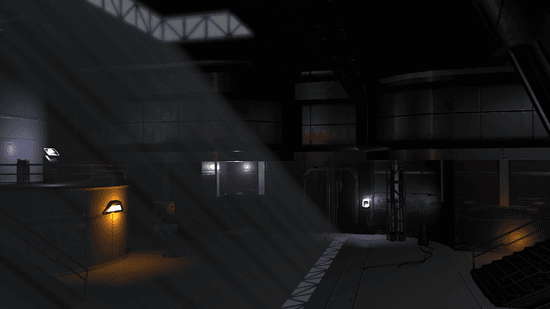
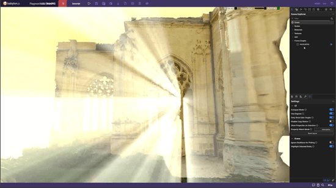
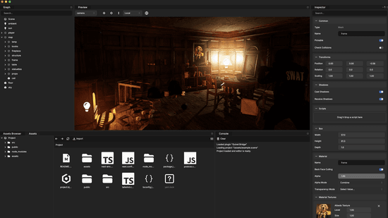
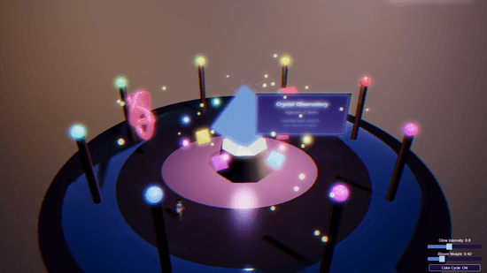
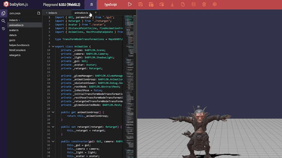
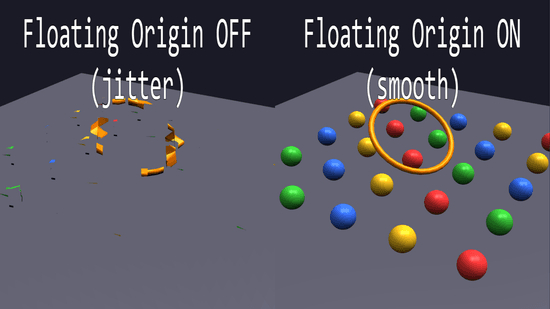
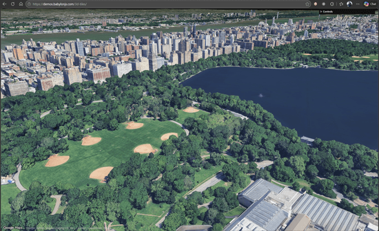
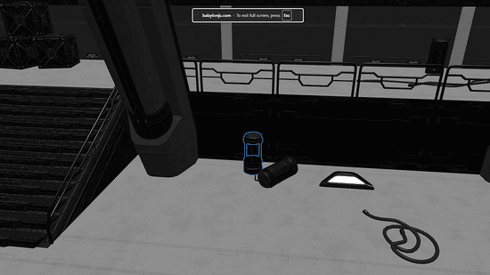

Our mission is to build one of the most powerful, beautiful, simple, and open web rendering engines in the world. Today, web graphics and rendering hit the accelerator with the release of Babylon.js 9.0. It represents a year of new features, optimizations, and performance improvements aimed at helping you create more compelling, interactive web experiences faster than ever.









We don't take it lightly when we say that Babylon.js is fully-featured. Dive in to see how far this rabbit hole goes!